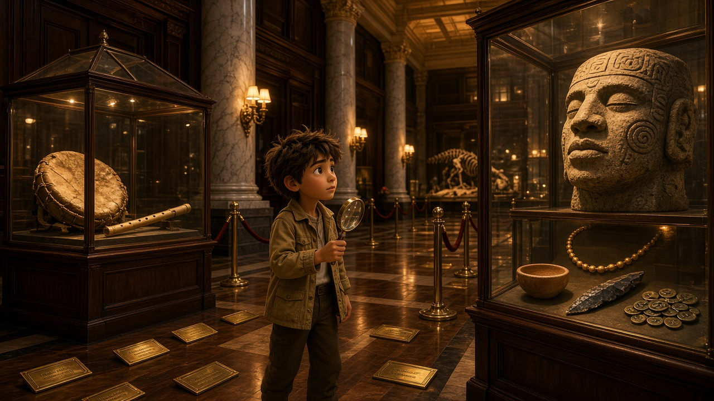

The Case of the
Unlabeled Artifacts
Last night at the National Museum of History, an intruder knocked down every golden label in the Prehistory Hall! Ten priceless ancient treasures are now left mystery objects.
Audio Briefing
Click to hear your chief inspector outline the mission and review pronunciation for our 10 target museum artifacts.
Listen and repeat the ten words. After “Now you”, number the five pairs.

Sculpture
Treasure Hunt: Return the Golden Labels
Mission 1: Artifact Identification
Look at the museum hall picture and the clue, then select the correct word to return the label.
Mission 2: What Was It For? (Function & Purpose)
Grammar pattern: It was for [verb]-ing. Look at the hall picture and match each prehistoric artifact to its true purpose!
Mission 3: Detective Logic (True or False)
Look at the hall picture if you need it. Test each witness statement about prehistoric life and museum artifacts. Choose TRUE or FALSE.
Mission 4: Field Report Log (Gap-Fill)
Look at the hall picture if you need a reminder, then fill in the blank in each field log sentence using the word bank.
Prehistory Hall Pedestal: Returned Labels
Detective Spelling Master
Prepare for the vocabulary dictation! Practice spelling 8 key prehistoric words through 4 challenging formats.
Scotland Yard Junior Detective Report
Summarize what you found in the Prehistory Hall. Write 4 to 6 sentences using the target museum vocabulary.
Master Detective Badge
Awarded for successfully restoring the Prehistory Wing labels at the National Museum of History.
Target vocabulary acquired: 10/10 items. Use this report for your classroom portfolio or speak aloud for fluency assessment.
Treasure Hunt Homework: The Secret Vault
These tasks are brand new and separate from the lesson. Complete the 4 independent detective assignments at home.
The Function Matrix: What was each used for?
Select the correct prehistoric object from the dropdown for each new real-world scenario.
Prehistoric Mini-Story: "A Night in Prehistory"
Choose the right words to complete this adventure story about an ancient family.
Long ago, people did not have modern houses. Today, we study this time in our lessons. In the evening, the family sat together around a warm to cook meat and keep wild animals away.
The mother poured clean spring water into a large clay . To prepare the dinner, the father used a sharp flint . In their culture, people didn't use paper money; they sometimes traded with a rare bronze or stone goods. After eating, the grandfather played a bone and everyone sang ancient songs. Today, all these amazing items are preserved inside our city !
Self-Dictation Memory Vault
Write 6 words from memory without looking at your Casebook. Type them below, then click "Reveal & Grade" to self-evaluate!
Creative Detective Sentences
Write your own original sentences using at least 5 target words. Follow the pattern: "In prehistory, people used a [word] for [verb]-ing..."